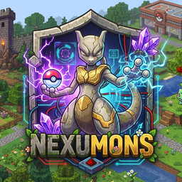

UNE NOUVELLE AVENTUREUn monde à cultiver.

Un monde à cultiver.
Une aventure à bâtir.
Explore avec tes Pokémon, développe ta ferme
et donne vie à tes machines Create.
COBBLEMONAGRICULTURECREATE
Society: Sunlit CobblemonMinecraft 1.20.1 · Forge